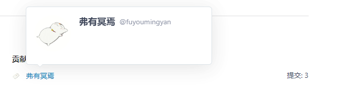
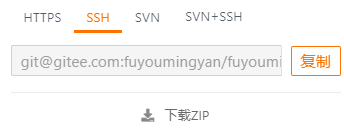
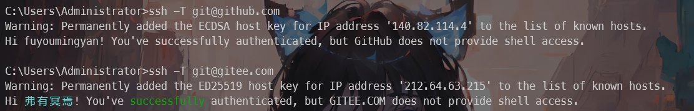
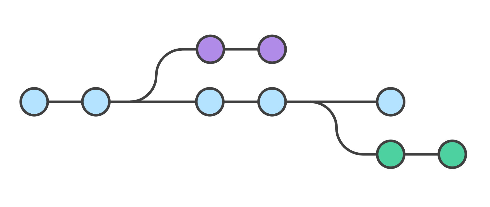

git 版本控制
- date
- 2023-05-29 17:18:36
官网：https://gitforwindows.org/
镜像：https://registry.npmmirror.com/binary.html?path=git-for-windows/
创建仓库
git init
git init 初始化一个仓库
| # 初始化当前目录
git init
# 初始化指定目录
git init <directory>
|
git clone
git clone 从现有 Git 仓库中拷贝项目
| # 克隆repo仓库
git clone <repo>
# 克隆repo仓库到directory目录
git clone <repo> <directory>
|
git config
git config 配置 git信息
查看配置信息：
编辑配置信息-打开vim编辑器
| git config -e # 针对当前仓库
git config -e --global # 针对系统上所有仓库
|
设置提交代码时的用户信息：

| git config --global user.name "弗有冥焉"
git config --global user.email fuyoumingyan@gmail.com
|
SSH 配置
gitee、github 都可以使用 ssh 公钥

ssh 相对于 https 更加方便，github 也更快。
| cd ~/.ssh
ssh-keygen -t rsa -C "fuyoumingyan@gmail.com"
cat id_rsa.pub
|
然后在 gitee 或者 github 上面添加 SSH 公钥即可。
验证：
| ssh -T git@github.com
ssh -T git@gitee.com
|

如果使用 ssh 的话，仓库的远程地址就是 git@gitee.com:fuyoumingyan/fuyoumingyan.git 这种的 SSH 地址了。
基本操作

- workspace：工作区
- staging area：暂存区/缓存区
- local repository：版本库或本地仓库
- remote repository：远程仓库
本地就是工作区，add 到缓存区，提交到本地仓库后，再push到远程仓库，就是推送到到 github，gitee 这种代码托管平台。
提交到本地仓库
| 命令 |
说明 |
git add |
添加文件到暂存区 |
git status |
查看仓库当前的状态，显示有变更的文件。 |
git diff |
比较文件的不同，即暂存区和工作区的差异。 |
git commit |
提交暂存区到本地仓库。 |
git reset |
回退版本。 |
git rm |
将文件从暂存区和工作区中删除。 |
git mv |
移动或重命名工作区文件。 |
查看仓库当前的状态，显示有变更的文件。
| $ git status
On branch master
Your branch is up to date with 'origin/master'.
# 未跟踪的文件
Untracked files:
(use "git add <file>..." to include in what will be committed)
# 8. Corrosion-2/ 文件夹未 add
8. Corrosion-2/
nothing added to commit but untracked files present (use "git add" to track)
|
add 到暂存区
| # add 所有文件-实际上还是只 add 未跟踪的文件
git add .
# add 指定文件
git add <filename>
|
| Administrator@DESKTOP-NURJR6J MINGW64 ~/Desktop/笔记/gitee penetration-test 仓库/靶机渗透 (master)
$ git add .
Administrator@DESKTOP-NURJR6J MINGW64 ~/Desktop/笔记/gitee penetration-test 仓库/靶机渗透 (master)
$ git status
On branch master
Your branch is up to date with 'origin/master'.
Changes to be committed:
(use "git restore --staged <file>..." to unstage)
new file: 8. Corrosion-2/Corrosion-2.assets/image-20230430104300814.png
new file: 8. Corrosion-2/Corrosion-2.assets/image-20230430105426167.png
new file: 8. Corrosion-2/Corrosion-2.assets/image-20230430110927971.png
new file: 8. Corrosion-2/Corrosion-2.assets/image-20230430111001206.png
new file: 8. Corrosion-2/Corrosion-2.assets/image-20230430163907626.png
new file: 8. Corrosion-2/Corrosion-2.md
|
commit 到本地仓库
| $ git commit -m '2023-04-30'
[master 13108bc] 2023-04-30
6 files changed, 814 insertions(+)
create mode 100644 "\351\235\266\346\234\272\346\270\227\351\200\217/8. Corrosion-2/Corrosion-2.assets/image-20230430104300814.png"
create mode 100644 "\351\235\266\346\234\272\346\270\227\351\200\217/8. Corrosion-2/Corrosion-2.assets/image-20230430105426167.png"
create mode 100644 "\351\235\266\346\234\272\346\270\227\351\200\217/8. Corrosion-2/Corrosion-2.assets/image-20230430110927971.png"
create mode 100644 "\351\235\266\346\234\272\346\270\227\351\200\217/8. Corrosion-2/Corrosion-2.assets/image-20230430111001206.png"
create mode 100644 "\351\235\266\346\234\272\346\270\227\351\200\217/8. Corrosion-2/Corrosion-2.assets/image-20230430163907626.png"
create mode 100644 "\351\235\266\346\234\272\346\270\227\351\200\217/8. Corrosion-2/Corrosion-2.md"
|
提交到远程仓库
| 命令 |
说明 |
git remote |
远程仓库操作 |
git fetch |
从远程获取代码库 |
git pull |
下载远程代码并合并 |
git push |
上传远程代码并合并 |
添加远程仓库 git remote
| $ git remote add -h
usage: git remote add [<options>] <name> <url> 仓库名 仓库链接
-f, --fetch fetch the remote branches
--tags import all tags and associated objects when fetching
or do not fetch any tag at all (--no-tags)
-t, --track <branch> branch(es) to track
-m, --master <branch>
master branch
--mirror[=(push|fetch)]
set up remote as a mirror to push to or fetch from
|
| $ git remote add gitee https://gitee.com/fuyoumingyan/penetration-test.git
|
查看远程仓库信息 git remote -v
| $ git remote -v
gitee https://gitee.com/fuyoumingyan/penetration-test.git (fetch)
gitee https://gitee.com/fuyoumingyan/penetration-test.git (push)
|
推送到远程仓库 git push
| $ git push -u gitee "master"
Enumerating objects: 13, done.
Counting objects: 100% (13/13), done.
Delta compression using up to 4 threads
Compressing objects: 100% (11/11), done.
Writing objects: 100% (11/11), 189.99 KiB | 12.67 MiB/s, done.
Total 11 (delta 2), reused 0 (delta 0), pack-reused 0
remote: Powered by GITEE.COM [GNK-6.4]
To https://gitee.com/fuyoumingyan/penetration-test.git
0b32d77..13108bc master -> master
branch 'master' set up to track 'gitee/master'.
|
提交日志
| 命令 |
说明 |
git log |
查看历史提交记录 |
git blame <file> |
以列表形式查看指定文件的历史修改记录 |
| $ git log
commit 13108bc60914d4cf27e2b34c474f918eb00648a2 (HEAD -> master)
Author: 弗有冥焉 <fuyoumingyan@gmail.com>
Date: Sun Apr 30 18:41:28 2023 +0800
2023-04-30
commit 0b32d77c5862b75b4d3ff179f6ed06801332237a (origin/master)
Author: 弗有冥焉 <fuyoumingyan@gmail.com>
Date: Sat Apr 29 20:44:00 2023 +0800
2023-04-29
commit 151dcd1252b948e2b060cbcd784ef706f9f5e7a0
Author: 弗有冥焉 <fuyoumingyan@gmail.com>
Date: Fri Apr 28 16:20:39 2023 +0800
2023-04-28
commit 28dc9e44df152a057d4deb1755a99237efd4d0f2
Author: 弗有冥焉 <fuyoumingyan@gmail.com>
Date: Fri Apr 28 16:11:43 2023 +0800
2023-04-28
|
忽略文件
.gitignore 文件用来指定有意忽略的未跟踪文件，就是不需要提交到仓库的一些文件
gitignore 语法：
# 用于注释，\ 表示转义，引用 \ 需要加引号 "\"* 任意字符 0 次或多次，? 任意字符 1 次 ，都不可以匹配 // 在开头表示从 .gitignore 文件所在的目录开始匹配/ 在末尾表示只匹配目录，否则同名的目录或文件都会被匹配! 表示不忽略某文件，但如果该文件的父级目录被忽略，则不起效果[] 匹配字符列表 ** 匹配多级目录
恢复文件
没有 add 的文件恢复 - 工作区
add 过但没有 commit - 暂存区
| git checkout <commit_id> <file>
|
commit 后恢复到以前的版本 - 本地仓库
分支管理
开发分支 - 负责开发
主线 - 开发完成后的主要业务线，正常的开发不会影响 - master/main
切换分支的时候，Git 会用该分支的最后提交的快照替换你的工作目录的内容， 所以多个分支不需要多个目录。

创建分支
创建仓库时创建分支，默认会创建一个 master 分支
已有仓库
查看分支
| $ git branch
deve
* master
|
注：创建分支失败或查看分支为空的原因是因为本地还没有创建分支，需要 commit 之后才可以
切换分支
切换分支
创建分支后直接切换到分支
| git checkout -b <branchname>
|
删除分支
| git branch -d <branchname>
|
重命名分支
| git branch -m <old-branch> <new-branch>
|
合并分支
合并的是提交。
- 切换到那个需要接收改动的分支上。
- 执行 “git merge” 命令，并且在后面加上那个将要合并进来的分支的名称。
报错解决
| # 1. 先拉下来合并
git pull origin master
# 2. 再上传上去
git push -u origin master
|
{kind=link}
{kind=link}
{kind=link}
{kind=link}